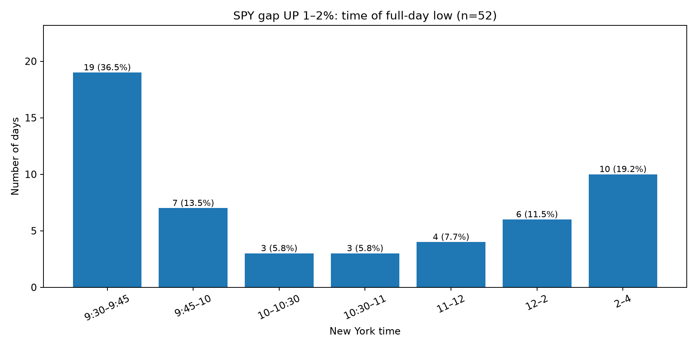
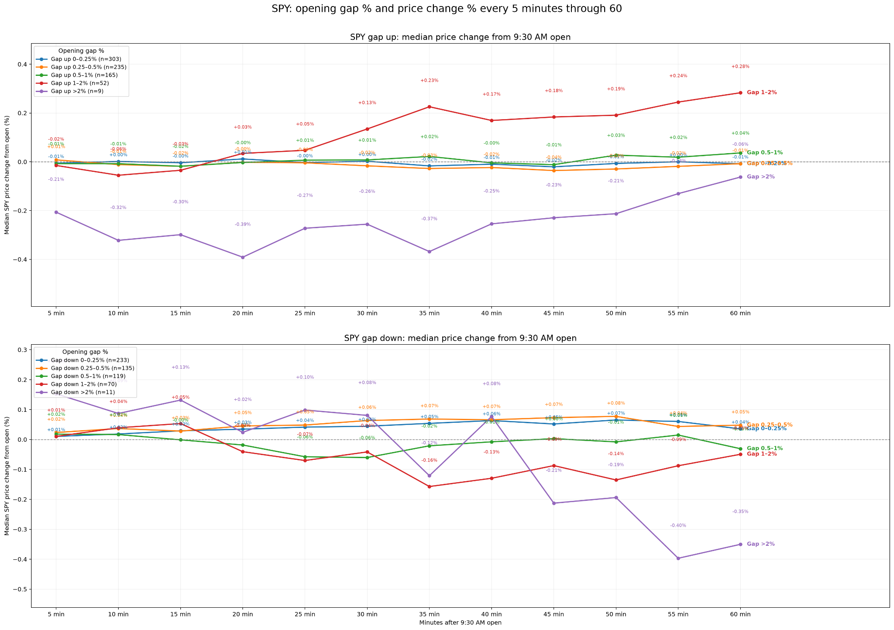
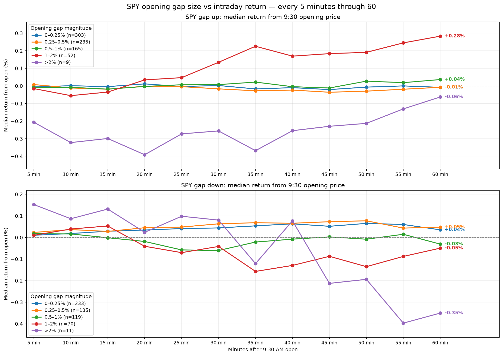
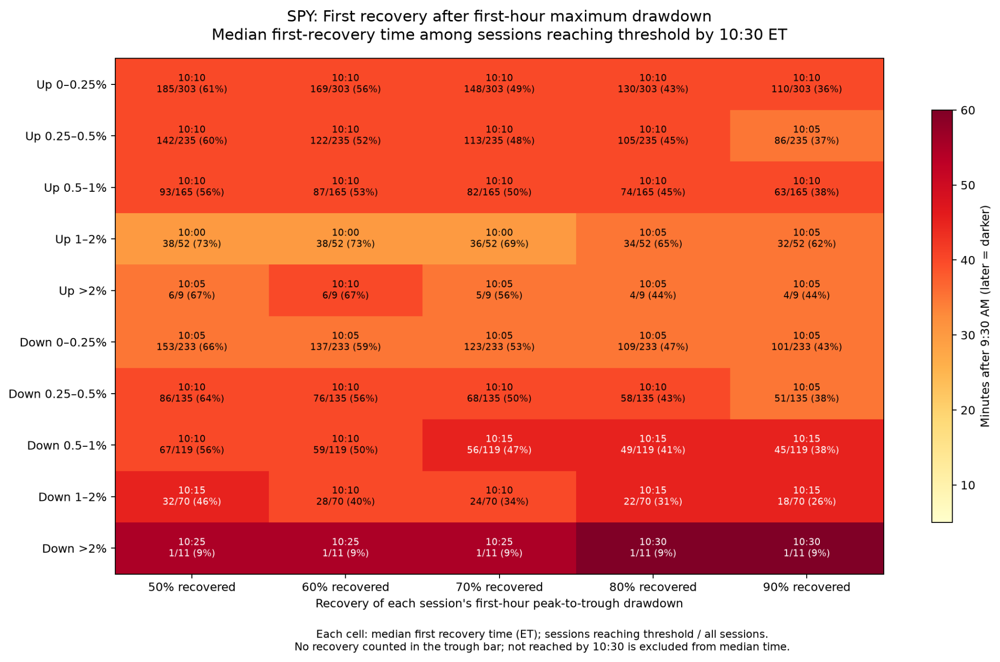
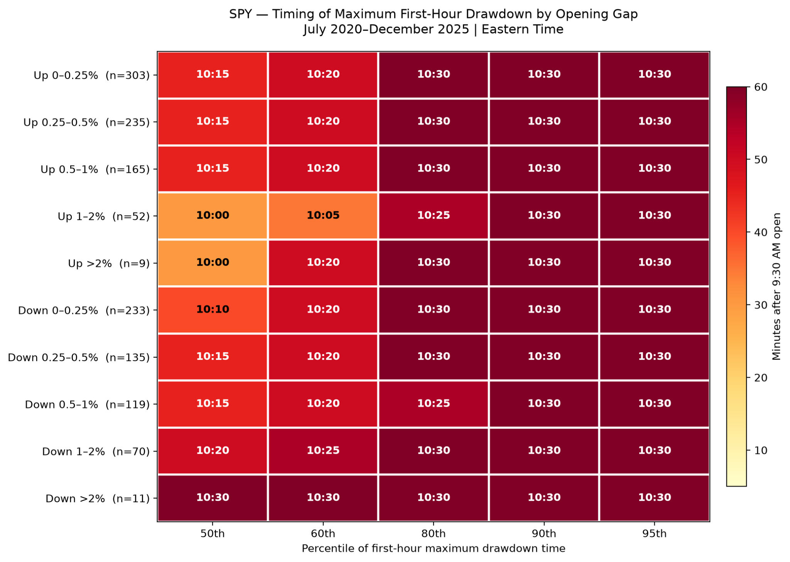
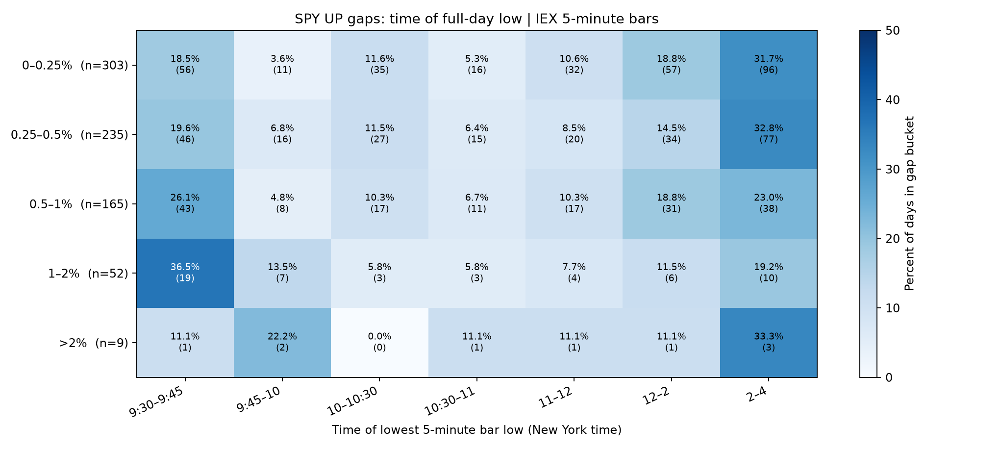
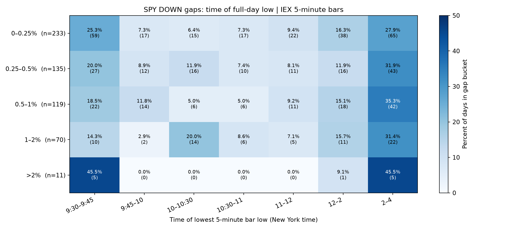

SPY Opening Gaps, Drawdowns & Recovery
QUANTITATIVE RESEARCH • July 2020–December 2025
A descriptive study of opening-gap magnitude, intraday lows, first-hour price paths, maximum drawdown timing, and recovery thresholds. An independent historical analysis of SPY intraday market behavior.
Executive summary
On 1–2% gap-up sessions, 19 of 52 (36.5%) made their full-day low during 9:30–9:45 AM. The remaining 33 days made their low later.
For the 1–2% gap-up group, median price change relative to the 9:30 AM opening price reached +0.28% at 10:30 AM. This is not a close-to-close return or a trade return.
In the recovery chart, 38 of 52 (73%) 1–2% gap-up sessions recovered at least 50% of the first-hour peak-to-trough drawdown by 10:30 AM; 32 of 52 (62%) reached 90%.
For gap-down sessions greater than 2%, only 1 of 11 (9%) met any of the displayed 50%–90% recovery thresholds by 10:30 AM. This sample is small.
Definitions and interpretation
Opening gap groups are the bins printed on the source charts. The price-path figures measure median SPY change from the 9:30 AM opening price, sampled every five minutes. The low-of-day heatmaps group the time of the lowest five-minute bar low. The drawdown timing chart shows percentiles of when the first-hour maximum drawdown occurred; its 10:30 AM values are at the observation-window boundary and should not be interpreted as a precise forecast.
The recovery heatmap measures the first qualifying recovery of a fraction of each session’s first-hour peak-to-trough drawdown, excluding recovery in the trough bar and sessions that did not meet the threshold by 10:30 AM from the reported median recovery time. The fractions shown in each cell use all sessions in that gap bin as denominator.
Chart-by-chart evidence
1. Time of full-day low after a 1–2% gap up
Among 52 sessions, 19 (36.5%) reached the full-day low in the first 15 minutes, 7 (13.5%) in the next 15 minutes, and 10 (19.2%) between 2:00 and 4:00 PM. Early lows are common, but not inevitable.

2. Gap-size groups and five-minute median price paths
Gap-up 1–2% sessions show the strongest positive median movement by 10:30 AM (+0.28%). Gap-up >2% sessions show −0.06% (n=9). Gap-down >2% sessions show −0.35% (n=11). The small extreme-gap samples require caution.

3. Clean comparison of first-hour gap paths
This is an alternate presentation of the same median price-path evidence, not an independent test. Do not count it as a separate sample or validation.

4. Recovery after first-hour maximum drawdown
For gap-up 1–2% sessions, 73% recovered at least half of their first-hour maximum drawdown, and 62% recovered at least 90%, by 10:30 AM. Median first qualifying recovery times for this group range from 10:00 to 10:05 AM among qualifying sessions.

5. Timing percentiles of first-hour maximum drawdown
For gap-up 1–2% sessions, the median timing shown is 10:00 AM, the 60th percentile is 10:05 AM, and the 80th percentile is 10:25 AM. For gap-down >2%, all shown timing percentiles are 10:30 AM, reflecting the end of the first-hour window.

6. Full-day low timing on gap-up days
The 1–2% gap-up row confirms 36.5% (19/52) in the first 15 minutes and 19.2% (10/52) in the final two hours. For 0–0.25% gap-ups, 31.7% (96/303) had lows in the final two hours.

7. Full-day low timing on gap-down days
For gap-down 1–2% sessions, 14.3% (10/70) made the full-day low in the first 15 minutes, versus 31.4% (22/70) during 2:00–4:00 PM. Gap-down >2% has only 11 observations.

Practical research implications
The 1–2% gap-up category deserves further study for early-low behavior and first-hour upward drift. The chart does not establish that buying the open or buying a dip is profitable after slippage and risk.
A recovery percentage is not a probability of making a profitable trade: it is conditioned on a specified drawdown and a specified recovery threshold. The timing and magnitude of the trough matter.
Do not treat the >2% gap categories as robust evidence. The plotted samples are 9 gap-up sessions and 11 gap-down sessions.
Before turning patterns into a strategy, define entry time, observable signal, stop, target, holding period, execution assumptions, and out-of-sample walk-forward tests. Avoid using information from later in the session to decide an earlier entry.
Research limitations
The figures were interpreted from the seven supplied chart images; the underlying IEX five-minute observations and scripts were not independently audited here. The charts describe July 2020–December 2025 and may be sensitive to regime changes, sampling, adjusted prices, gap definitions, and the exact definition of maximum drawdown. Medians are not means; descriptive frequencies do not establish causal effects or future predictability.
Independent historical research. Not investment advice.